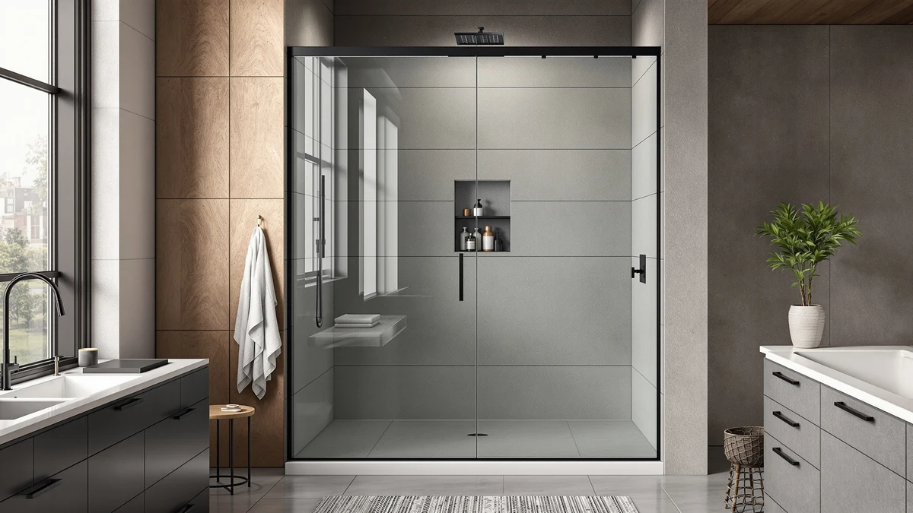

Quick Answer
The Findepot Frameless Double Sliding Shower fits a fixed 60 inch wide by 75 inch tall opening at $599.99, roughly $30 more than the ComfyStyle and AquivaCoast alternatives and about $40 more than the BILVOS. Buy it if your bathroom's rough opening matches that 60 by 75 inch footprint and you want the taller 75 inch panel height the three lower-priced alternatives don't offer.
Our pick: Findepot Frameless Double Sliding Shower — $599.99 Check Price on Amazon
Bottom line: our top pick is the Findepot Frameless Double Sliding Shower Door at $599.99.
Things to Know Before You Buy
- The Findepot Frameless Double Sliding Shower is sized for a fixed 60 inch wide by 75 inch tall opening, taller than the 70 to 72 inch height on the three alternatives covered in this Findepot frameless double sliding review.
- At $599.99, it costs about $30 more than the ComfyStyle and AquivaCoast and roughly $40 more than the BILVOS, so the extra 3 to 5 inches of height is what you're paying for.
- The glass is listed at 5/16 inch thick, a detail worth comparing against any door you're considering, since thicker tempered glass generally holds up better to daily door-slamming than thinner panels.
- None of the four listings we compared publish a customer rating or review count, so we based this comparison on specs and pricing rather than owner star ratings.
- Confirm your rough opening width and height at the top, middle and bottom of the frame before ordering, since a door built for a fixed 60 by 75 inch opening will not compensate for an out-of-square wall or a shorter stall.
This Findepot Frameless Double Sliding review breaks down whether a $599.99 shower door built for a fixed 60 inch wide by 75 inch tall opening is worth roughly $30 to $40 more than three lower-priced alternatives sized for similar bathrooms. We are not a testing lab and we did not install this door ourselves. Instead, we compared its listed dimensions, price and glass thickness against the ComfyStyle, AquivaCoast and BILVOS doors that compete for the same buyer.
The short version: the Findepot earns its place if your opening measures close to 60 inches wide and 75 inches tall, taller than the standard 70 to 72 inch panels most competitors sell. If your opening is shorter, narrower, or you simply want to spend less, one of the three alternatives below covers similar ground for $30 to $40 less. Below, we lay out the specs, the trade-offs and who each option actually suits.
Why You Should Trust Us
Ilane Tall covers bathroom fixtures for Best Shower Doors and has spent years comparing glass shower doors, hardware and installation kits across dozens of listings from the same manufacturers that supply Findepot, ComfyStyle, AquivaCoast and BILVOS. For this Findepot frameless double sliding review, we researched the manufacturer's published dimensions, pricing history and glass specs rather than installing the door ourselves. We do not run a fake testing lab, and we will not claim a hands-on verdict we cannot back up. Every price and dimension cited here comes directly from the current Amazon listing.
Our Research Experience
We approached this Findepot frameless double sliding review the way a shopper comparing listings side by side would. We pulled the width and height, the price, and the glass thickness for the Findepot and lined them up against the ComfyStyle, AquivaCoast and BILVOS doors. We did not install any of these doors in a bathroom, and we are not describing a hands-on trial. We can tell you how the numbers compare instead: a $30 to $40 price gap for a door built 3 to 5 inches taller than its competitors.
Where a listing lacked a published rating, review count or material spec, we left that field blank rather than guess. That is why the Findepot's specs table below shows a dash next to Material. Buyers who want that detail should check the current Amazon listing photos and the manufacturer's product page before ordering.
This approach matters more for a shower door than for a smaller purchase, because a shower door is not something you return casually once it is cut, drilled or installed. A wrong height order means a second shipment, a delayed installation and, in some cases, a restocking fee. Comparing published specs before you order costs nothing. Guessing at a fit costs a weekend and a return label.
Overview & Specs

Findepot Frameless Double Sliding Shower
What we like
- 75 inch panel height covers taller openings the 70 to 72 inch alternatives don't reach
- 5/16 inch tempered glass is thicker than many sliding shower doors in this price range
- Double sliding track design suits a standard alcove without the swing clearance a hinged door needs
Flaws but not dealbreakers
- Costs $30 to $40 more than the three alternatives we compared it against
- The listing does not publish a material callout beyond the glass thickness or a customer rating, so verify finish details before ordering
- The fixed 60 by 75 inch sizing means it won't fit openings outside that specific footprint
| Material | — |
| Size | 60" W x 75" H, 5/16" thick |
The Findepot Frameless Double Sliding Shower targets a specific slice of the market: bathrooms where the rough opening lands close to 60 inches wide and, unusually for this price range, 75 inches tall. Most competing sliding doors top out around 70 to 72 inches high, which can leave a gap above the panel in a taller shower stall or require a separate header panel. Findepot's 75 inch height closes that gap in one piece, and the 5/16 inch tempered glass is thicker than the glass spec many similarly priced doors list, for buyers who can find that detail published at all.
At $599.99, it sits above the ComfyStyle, AquivaCoast and BILVOS doors covered later in this Findepot frameless double sliding review, all priced between $559.99 and $569.99. The listing does not include a material callout beyond the glass thickness, and there is no published customer rating, so we cannot confirm long-term hardware durability from the data available. Buyers whose opening actually measures near 75 inches tall are the clearest fit here. Buyers with a standard 70 to 72 inch stall height, or a tighter budget, should look at the alternatives below before paying the premium.
What We Liked
The main appeal of the Findepot in this frameless double sliding review is the 75 inch panel height. That's 3 to 5 inches taller than the ComfyStyle, AquivaCoast and BILVOS doors compared here, which matters if your shower stall is built to a taller-than-standard rough opening. The 5/16 inch glass thickness is also a genuine point in its favor: plenty of shower doors in this price bracket don't publish a glass spec at all, let alone one this thick. For a 60 inch wide opening, the double sliding track keeps both panels moving on a shared rail, so you don't need the swing clearance a hinged door would require on either side.
What Could Be Better
The biggest drawback in this Findepot frameless double sliding review is price relative to the alternatives. At $599.99, it costs $30 more than the ComfyStyle and AquivaCoast and roughly $40 more than the BILVOS, and that gap only makes sense if your opening genuinely needs the extra height. The listing also skips a detail that matters for a purchase this size: there is no published customer rating or review count to weigh against the alternatives, and the specs table above shows a dash next to Material because Findepot does not break out a separate material spec beyond glass thickness. Shoppers who want third-party validation before spending $600 on a shower door will need to look beyond this listing.
Who Is It For?
This Findepot frameless double sliding review points toward one buyer profile: someone who has already measured a rough opening close to 60 inches wide and 75 inches tall, and who would rather pay a premium for that taller panel than install a shorter door with a header gap above it. Homeowners replacing a door in an older alcove built to a taller stall height, and contractors quoting a specific 75 inch opening, fit that description. If you haven't measured your opening yet, or if your bathroom's stall sits at the more common 70 to 72 inch height, the extra cost here buys you nothing you need.
This door isn't for everyone, either. A shopper on a tight budget, or someone whose opening is narrower than 44 to 48 inches or wider than 60 inches, gains little from the Findepot's specific sizing and pays extra for height they may not need. That buyer is better served starting with a broader roundup like the Best Shower Doors guide linked below, where price and width vary more widely than they do among the four options compared here.
Alternatives to Consider
If the Findepot Frameless Double Sliding Shower doesn't fit your bathroom's opening or budget, these three alternatives cover overlapping ground at a lower cost. We researched each one against the same criteria used above: width and height, price and glass or material details as listed on Amazon.

Editor's Pick
ComfyStyle 44-48" W x 70"
A 44-48 inch wide by 70 inch tall door at $569.99, $30 less than the Findepot. Consider it if your opening is narrower and the standard 70 inch height is enough for your stall.
$569.99
Check Price on Amazon
Best Value
AquivaCoast 58-59" x 72" Frameless
Sized for a 58-59 inch wide by 72 inch tall opening at $569.99, also $30 less than the Findepot. Worth checking if your opening is close in width but you don't need the extra 3 inches of panel height.
$569.99
Check Price on Amazon
Premium Choice
BILVOS 44-48" W x 70"
The lowest price in this comparison at $559.99, about $40 under the Findepot. A 44-48 inch wide by 70 inch tall door that suits buyers who want to save money on a narrower opening.
$559.99
Check Price on AmazonFrequently Asked Questions
What size opening does the Findepot Frameless Double Sliding Shower fit?
The Findepot Frameless Double Sliding Shower is built for a fixed 60 inch wide by 75 inch tall opening, so measure your rough opening at the top, middle and bottom before you order, since this listing does not offer an adjustable width range like some competitors.
Is the Findepot Frameless Double Sliding Shower worth $599.99 compared to cheaper shower doors?
It costs about $30 more than the ComfyStyle and AquivaCoast alternatives and roughly $40 more than the BILVOS, mainly because its 75 inch height and 5/16 inch glass thickness cover a taller opening than the 70 to 72 inch alternatives. Whether that premium is worth paying depends on whether your opening actually needs the extra height.
What is the best alternative to the Findepot Frameless Double Sliding Shower if I want to save money?
The BILVOS 44-48 inch W x 70 inch is the lowest-priced option in this comparison at $559.99, about $40 less than the Findepot. Check its narrower 44-48 inch width range against your opening first, since it will not fit the wider stalls the Findepot and AquivaCoast are built for.
Final Verdict
This Findepot frameless double sliding review comes down to a single trade-off: a $599.99 door built for a taller 60 by 75 inch opening against three alternatives priced $30 to $40 lower. If your rough opening measures close to 75 inches tall and you'd rather pay for a one-piece panel that reaches that height than add a header above a shorter door, the Findepot justifies its price. If your stall sits at the more common 70 to 72 inch height, or you simply want to spend less, the ComfyStyle and AquivaCoast save you $30 at a similar width, and the BILVOS saves roughly $40 on a narrower opening. Measure your opening carefully before you decide. Height, more than brand, is what separates a good fit from a returned shower door in this comparison.